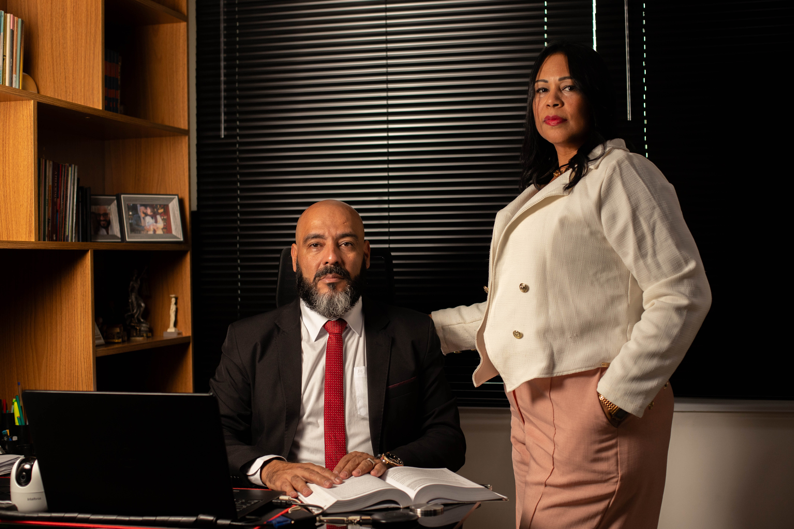

ADVOCACIA EM SÃO GONÇALO - RJ · ATENDIMENTO ONLINE E PRESENCIAL
Da Justiça do Trabalho à Justiça de Família, da defesa criminal aos contratos do dia a dia, a Gomes & Medeiros acompanha pessoas físicas e empresas com clareza, agilidade e estratégia jurídica real.
FALAR COM UM ADVOGADO AGORA
UM SÓ ESCRITÓRIO, TODAS AS FRENTES DO SEU CASO
Uma demissão pode envolver verbas trabalhistas, pensão alimentícia e até questões criminais ao mesmo tempo.
Trocar de advogado a cada nova frente do mesmo caso custa tempo, dinheiro e, com frequência, o resultado.
Você precisa de quem enxergue o caso como um todo, não apenas o pedaço que cabe em uma especialidade.
E, acima de tudo, de alguém que explique cada etapa em uma linguagem que você realmente entenda.
Por isso a Gomes & Medeiros reúne, em um só lugar, as áreas que mais aparecem na vida de pessoas e empresas: Cível, Trabalhista, Criminal e Família e Sucessões. Um único ponto de contato, uma estratégia coordenada do início ao fim do seu caso.
“Antes de qualquer estratégia, a gente escuta. Cada processo tem uma história, e quem está do outro lado precisa entender cada passo do caminho.”Tatiane Medeiros & Wallas Manhães, Sócios Fundadores
QUEM SOMOS
A Gomes & Medeiros nasceu para ser o tipo de escritório que qualquer pessoa gostaria de encontrar ao precisar de um advogado: alguém que explica antes de agir, que define uma estratégia clara e que acompanha o cliente de perto, seja online, seja presencialmente. Atuamos nas frentes que mais aparecem no dia a dia de pessoas e empresas: da rescisão de contrato de trabalho à partilha de bens, da defesa em processos criminais às questões de consumo, sempre sob uma mesma estratégia, conduzida por uma equipe que conversa entre si.
Conduz a estratégia jurídica dos casos do escritório nas áreas Cível, Trabalhista e Criminal, com objetividade técnica e atenção a cada detalhe do processo, do primeiro contato ao desfecho do caso.
Responsável pelo acompanhamento próximo que é a marca da Gomes & Medeiros: traduz cada etapa do processo em uma linguagem clara, mantendo o cliente informado e seguro do início ao fim do caso.
COMO FUNCIONA
Explique sua situação pelo WhatsApp ou presencialmente. Entendemos o contexto completo antes de qualquer recomendação, sem custo na avaliação inicial.
Definimos, junto com você, o caminho mais adequado (acordo, negociação extrajudicial ou ação judicial), sempre explicando o porquê de cada decisão.
Conduzimos o processo de ponta a ponta, com atualizações claras a cada etapa, até a resolução do seu caso.
ÁREAS DE ATUAÇÃO
Contratos, indenizações, conflitos de consumo e questões patrimoniais: defesa técnica para pessoas físicas e empresas.
Rescisões, verbas, horas extras e danos morais no ambiente de trabalho: atuação para empregados e empregadores.

Defesa técnica em processos criminais, com foco em estratégia, prazos e garantias constitucionais.
Divórcio, guarda, pensão, inventário e partilha de bens, conduzidos com sensibilidade e clareza.
PERGUNTAS FREQUENTES
Não. O primeiro contato serve para entendermos sua situação com calma, sem compromisso. Só depois dessa avaliação apresentamos a estratégia recomendada e os valores envolvidos.
Atendemos das duas formas. Boa parte do acompanhamento (reuniões, envio de documentos e atualizações do processo) pode ser feita totalmente online, pelo WhatsApp ou videochamada, com a mesma atenção do atendimento presencial.
Depende da área, da complexidade do caso e se há ou não acordo entre as partes. Durante a avaliação inicial explicamos um prazo estimado realista e mantemos você atualizado a cada etapa.
Sim. Conflitos de consumo, cobranças indevidas e indenizações fazem parte da nossa atuação em Direito Civil. Avaliamos o caso e indicamos o caminho mais rápido: negociação direta ou ação judicial, se necessário.
Reúna os documentos que tiver (carteira de trabalho, contracheques, termo de rescisão) e entre em contato. Fazemos uma análise das verbas devidas e orientamos sobre o prazo para reclamar seus direitos, que é limitado.
Sim, o quanto antes. Em qualquer situação que envolva inquérito, audiência ou flagrante, ter acompanhamento jurídico desde o início é essencial para preservar seus direitos e definir a melhor estratégia de defesa.
Quando há consenso sobre partilha de bens, guarda e pensão, o divórcio costuma ser mais rápido e pode até ser feito em cartório, com acompanhamento de advogado. Cuidamos de toda a documentação e te orientamos em cada decisão.
Sim. Nosso escritório fica em São Gonçalo (RJ), mas grande parte do atendimento pode ser feita remotamente, e atuamos em processos em diferentes comarcas. Fale com a gente para entender como funcionaria no seu caso.
LOCALIZAÇÃO & CONTATO
Atendimento online em todo o Brasil e presencial em São Gonçalo (RJ). Escolha o canal mais conveniente: respondemos pelo WhatsApp com agilidade.
Av. Pres. Kennedy, 735 - Sala
Estrela do Norte, São Gonçalo - RJ
CEP 24445-795
Segunda a sexta, das 9h às 18h
Atendimento online sob agendamento
Atendimento pelo WhatsApp, online ou presencial. Avaliação inicial sem compromisso.
FALAR COM UM ADVOGADO ESPECIALISTA